This map shows where we were inside the purple circle. It is the southernmost part of China.
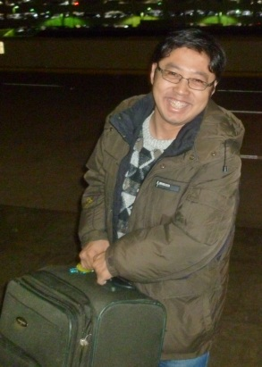
Our trip started with our friend Chunhai's cheerful face picking us up for our ride to the airport at 4:50am. How he could be that happy about giving a ride that early is amazing to me!

Eric was feeling a little intense. It looks like he was saying, "This is my Chunhai - you'll have to get your own!"

One of the worst pictures ever taken of us - you'll see other very bad pictures of us later! This is in the OKC airport while we waited for our first flight.
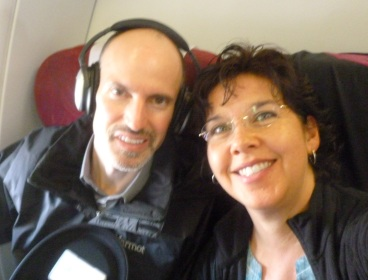
This was on our overseas flight from L.A. to Shanghai

We had the very back seats in the huge plane on the overseas trip, and we hardly slept a wink on the 14 hour flight. Our Ambiens were duds!

Here we are on the last leg of the trip from Shanghai to Haikou. Eric hadn't been sleeping well for days and now we're on our 31st hour of almost no sleep - fun times!
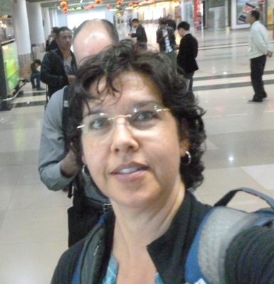
Just as we arrived at the Haikou airport, Eric got a call. So this was what I did for our "arrival photo."
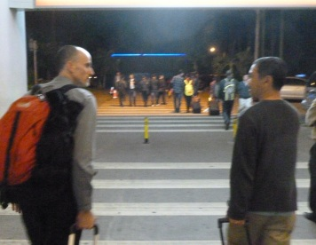
Here our friend Diody helps us with a ride from the airport. We were over an hour delayed - it was about 12:30am at this point and he had to get up early the next morning, but he was also all smiles - just like Chunhai.
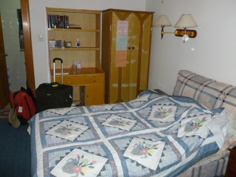
Our abode for the first two weeks of the trip. Part of our stay would include a move to a new house.
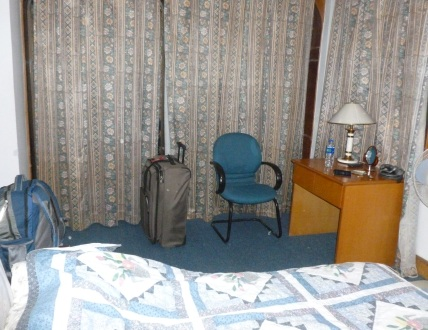
Another view of our room at the first house.

The next morning - Rebekah, Eric, and Boomer the dog. (BTW - The dog's name has nothing to do with the OU Sooners.)

The house

Rebekah

The coffee shop, a new endeavor being started by our friends. Eric drank gallons of tea here, but since I can't do caffeine I didn't have much tea.

The upper floor of the coffee shop where we had our Tea Talk sessions.

The squatty potty at the coffee shop. It was nice and clean but still tricky to use.
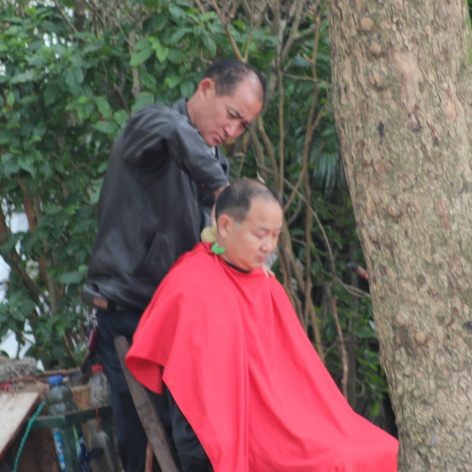
On a walk around town, a mobile barber doing business on the side of the road.

Store front

Interesting car names. This is a Nissan but not a brand that we have in the States.

This is a Toyota Highlander - Chinese style
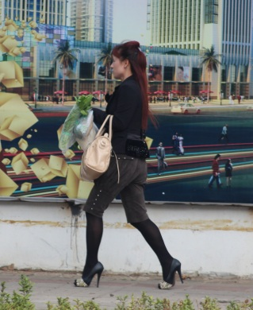
We saw many amazing (read super non-practical) shoes here. How about these for a shopping trip to town?

If you hang around long enough, you can see nearly everything being hauled on a bike.
We visited Cambodia in 2007 and one thing that was very noticeable then was the noise and exhaust from the motorcycles and busses everyone used. I haven't seen a single gas-powered bike here, these are all electric bikes and natural gas powered buses. It seems to help reduce both the noise and the exhaust fumes.
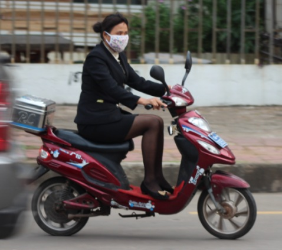
You also see ladies in all kinds of fancy dress out on their eBikes.

Bamboo scaffolding - looks very safe, doesn't it?! They use this even on very tall buildings.

This guy was spraying paint on a 2nd floor wall with no mask and no safety equipment of any kind. I guess the boss doesn't have Worker's Comp to worry about!
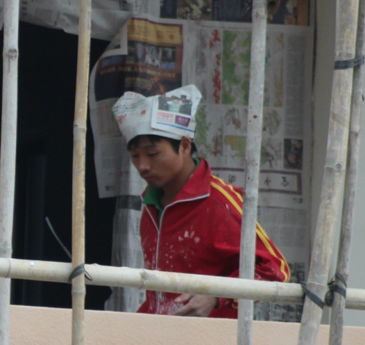
Nice hat

We love this - you get a green countdown of how much longer the light will be green, then a red countdown of how long the light will stay red. Awesome!
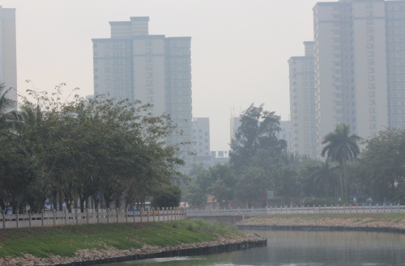
There are a lot of canals in this area, and if you don't look at the water too closely, they can be kind of pretty.
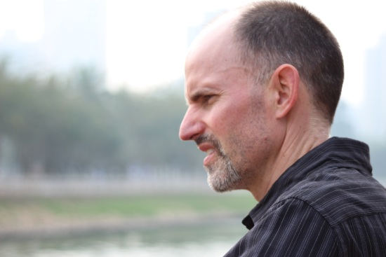
Deep thoughts over the canal.

How much is that doggie in the window?

We had always heard that the Chinese don't like pets (except maybe as a stew) but we were amazed to find that nearly everyone here seems to have a dog. There were several pet shops near our house, including this one - notice that they may paint eyebrows on the dogs as a bonus!
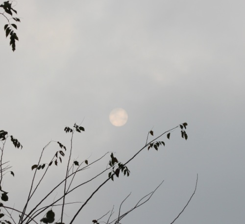
Some days the smog/fog was so thick you could look right at the sun. Other days it was clear and sunny. It was always warm, we're guessing a sticky 85 degrees or so.

Hey, free coconut.

Sassy travel woman.

Out walking at night - there were stores after stores after stores. It was very safe-feeling.
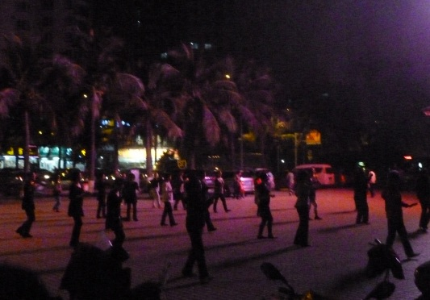
I called this Chinese Zumba. There were older ladies (and a few brave men) out here dancing every single night. The ladies up front led and everyone else did their best to follow.

I have never seen people push a bus before so I had to capture the sight.
Movie Moment - Want to see a video of Eric doing Chinese Zumba with the ladies? He almost keeps up with "Mr. Rhythm" who was the guy in front of him. Eric is toward the back left.

Trash collection appears to be a private enterprise there. People come to get your trash (sometimes even paying you for it) and then they sort it - selling off anything that has a secondary market. The rest gets dumped into the street to be shoveled into a garbage truck.

Trash shoveling in action.
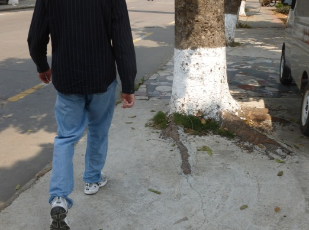
Forget landscaping around those pesky tree roots - just run the cement right up against them!

There is a collection like this in front of most restaurants in the area - including the little lamb at the bottom. They had such a pitiful cry, I nearly cried with them!
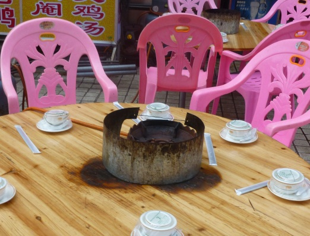
These are the tables for the restaurant where the animals at left were destined to be eaten. Hot pot - street style.
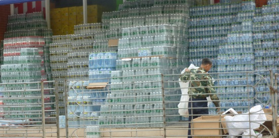
More bottles of water than I've ever seen in one place before.
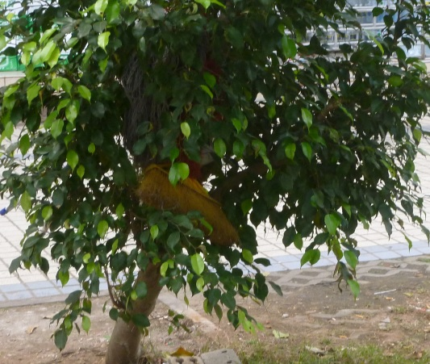
A broom tree. Joke! Someone had thrown two brooms into this tree for safekeeping.
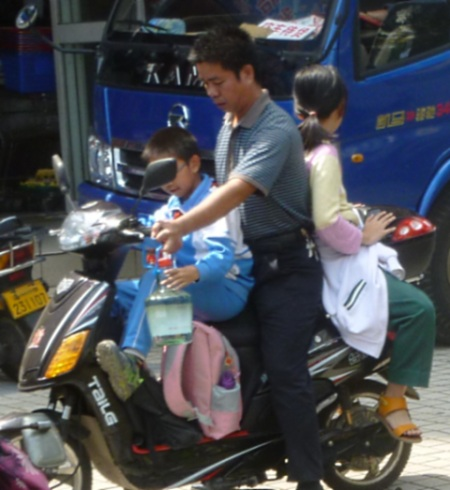
Dad's checklist: Older child? Check. Younger child? Check. Giant bottle of Vodka? Check. "Here son, help me hold this."
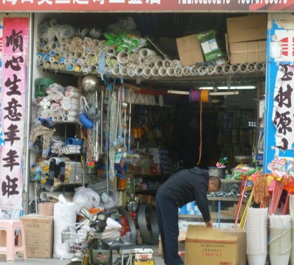
The Lowe's of China. There was one of these stores on nearly every street.

One of many wonderful meals eaten with our friends. It was clean and safe and tasty. It was our "almost America" haven in the midst of the Chinese confusion outside.
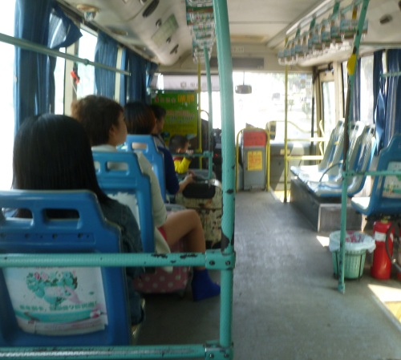
On one of MANY bus rides we took.
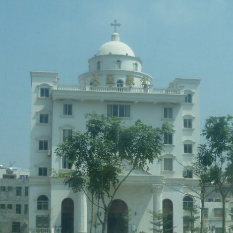
A 3 self church in town. We did not get to visit it.

Our favorite store (because it had imported foods) RT-Mart. It was HUGE and multi-story. It contained one of at least 4 KFCs that are in the area. Also the only McDonalds I saw.
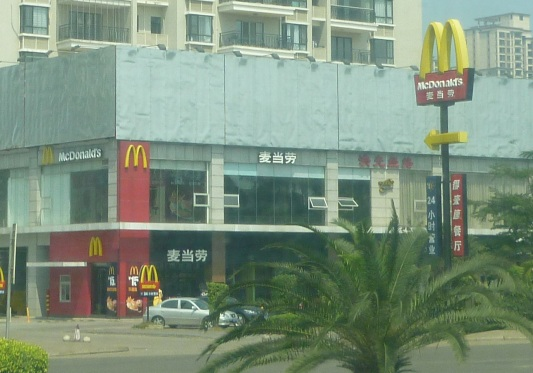
The aforementioned McDonald's. It was the only one I saw. We did not eat at either it or KFC. There were also several Pizza Huts (they seemed to share the locations with KFC.) We didn't go there either, but were told that all have changed their menu to be more "Chinese style."
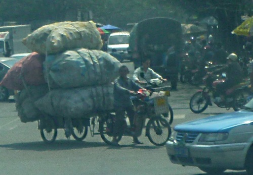
"I'm just going to haul a few bags to town with my bicycle dear..."

Lena giving an English lesson to 6th graders at ShenGao school. Right after this we gave two lessons in English to 5th graders, at which point we discovered that we are not gifted with skills for teaching.
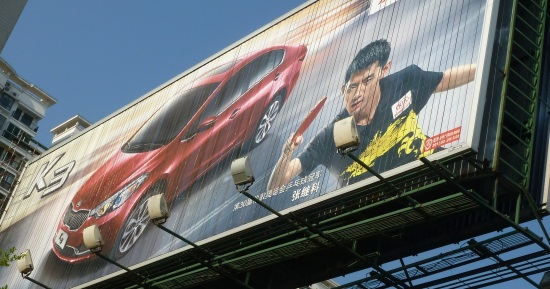
A billboard trying desperately to make Ping Pong look like a sexy sport.
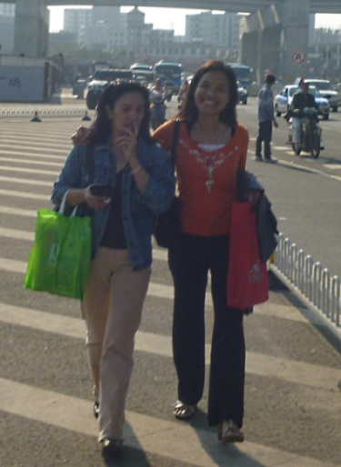
Good friends - Lena & Almie
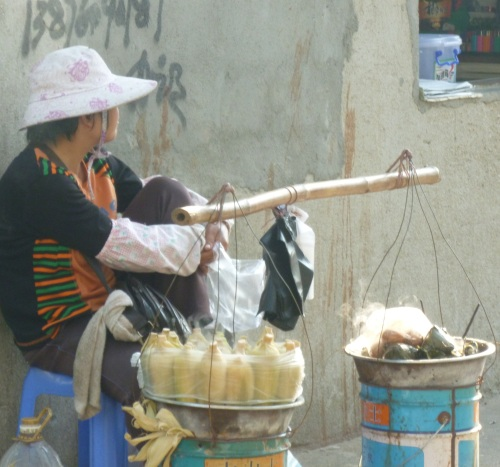
The corn on the cob lady. I saw her so often in the same spot that I started using her as a navigational landmark. We saw people eating corn on the cob in the strangest places - including the boarding area of the Shanghai airport.

The RT-Mart parking lot. We've never seen so many bikes in one place before.

There were ramp-scalators (escalators without steps) for you and your grocery carts. The carts had automatic brakes that came on when you got on the ramp. Also, many escalators we saw only turned on when someone broke the light beam at the bottom, instead of running all the time. Smart!

Just like the dried seafood department in Wal-Mart back home!

There were lots of bulk items, but we couldn't identify most of them.
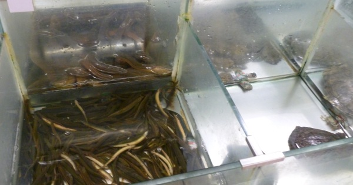
Meanwhile, in the non-dried seafood department, we had mud skippers, turtles, eels, and other fun things
About this time I got to see a kid in split pants being held over a trash can so that he could pee right in the middle of the produce department. I wasn't able to get a picture but I had to share the experience with you.

Speaking of fun, they like to leave the chicken exposed to, well, everything. This is a pile of chicken bits, and bunches of chicken feet - yum!

PJs - not just for around the house anymore.

A big market area along the bus route.
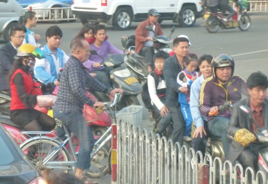
Every intersection, every light, was a big pushing, shoving match.

A lovely chocolate cake creation at the coffee shop. I think Eric ate most of it.
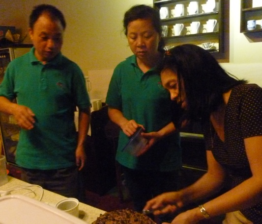
Finishing touches on the cake captured a lot of attention from Mark and Angie.
Angie cooked many, many excellent meals for us while we were there. Lena and Diody also showed their skills as masters of the kitchen as well. We ate like kings there!

Mud Skipper - seen on a walk on the sea shore.
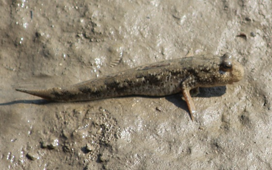
In case you wanted to see one even closer up.
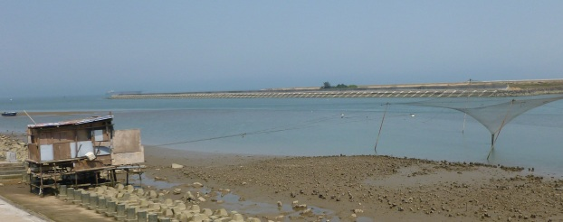
This was a shack and a strange net contraption on the side of the canal area.
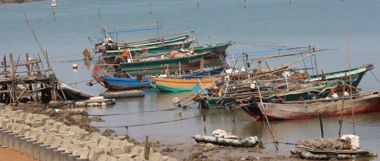
Fishing boats
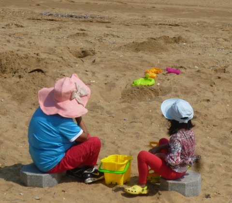
Hangin' at the beach

Walking along the sea shore.

This boat has seen a bit of action over the years.

Short-shorts for fishing seems so practical, maybe my Dad will want to try it?!! Jokes!

I feel it is discriminatory that only French Horns are banned from Chinese streets.

The house just before we started moving things out.

The dining room where many pleasant meals were consumed.
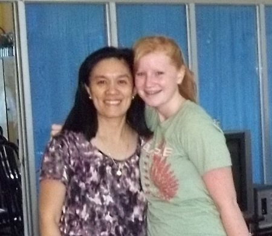
Lena and Kari
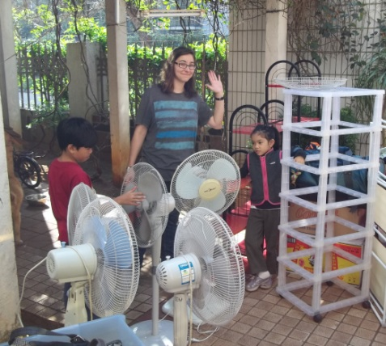
Sarah with Caleb & Rebekah & the stuff

The movers - we developed a love/hate relationship. They loved us girls, but didn't feel quite so affectionate toward Eric, who had the nerve to want to be efficient.
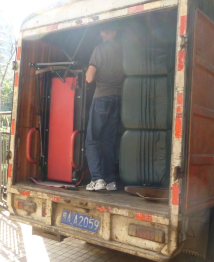
Eric, trying to rearrange the mess in the van so that we could fit more in. They didn't like this since it meant more for them to carry!

This was awesome - they got one of their guys stuck behind this cabinet so they just left him there for the drive across town to the new place. Here he is trying to pass a cup of water out between the cabinet and the side of the van. At least they gave him a cup of water before hauling him in that hot van!
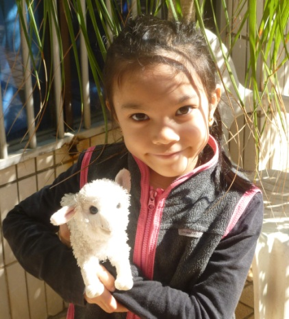
Rebekah found her cute lamb in the move, who is cuter?!
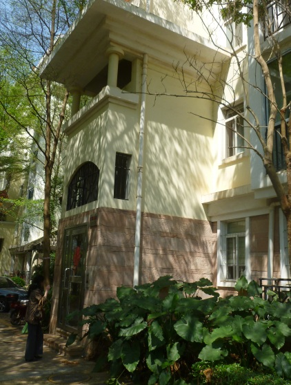
The new place
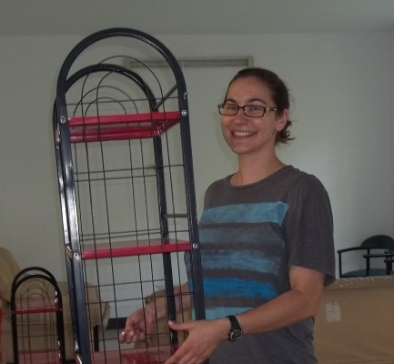
Sarah, movin' in and giving a big smile.

Me, happy to be there.

Eric, wanting to rip your heart out and make you eat it. Kidding! He wasn't angry, he just had his 'game face' on.
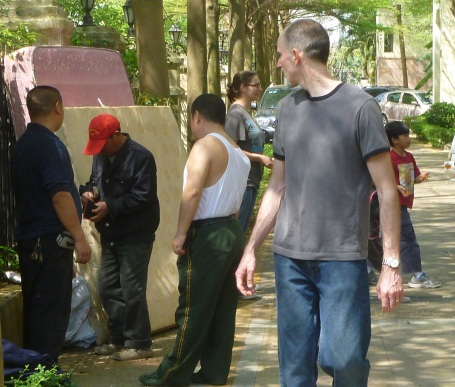
The movers charged extra to carry some furniture out of the apartment that had been left by the previous owner. They then promptly sold it right there in the parking lot. Nice work guys!
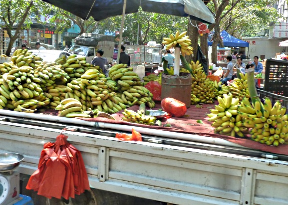
The new place has a market street right out front. This is our new source for bananas for the household.

We've been there nearly a week so far and haven't had to eat a "real" Chinese meal (meaning communal dishes and everyone using their own chopsticks to dig in the shared plates.) Eric is thrilled to finally get a chance to swap germs with 8 acquaintances.
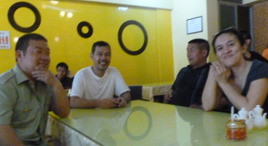
These guys aren't scared. They say, bring it on!
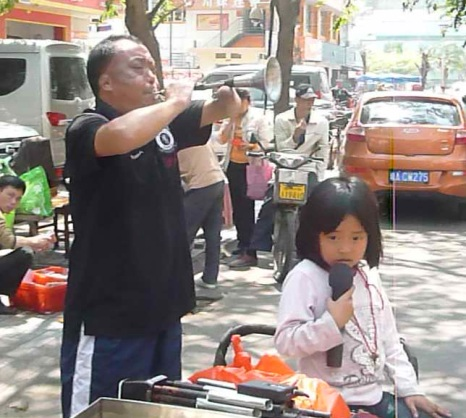
This guy and the little girl were making music in the street. You can see a video below.

Rebekah hitches a ride on Diody's shoulders, she did a lot of work in that move.
.png)
Movie Moment: Video of the musicians above.
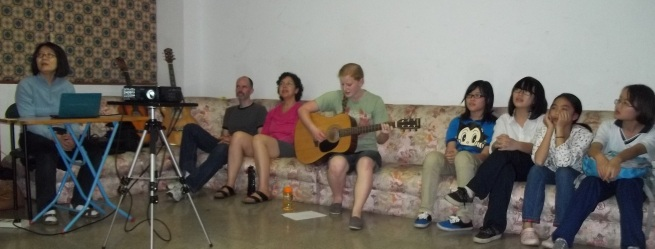
Later that night there was a teenager meeting at the house.
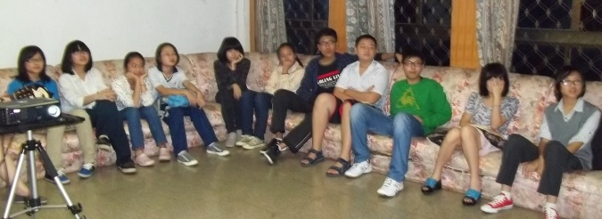
There were a lot of kids and they looked like a great group.

One of our tea talk sessions. Jackson, Derrick, Tom, Vivian, Eric, Shawnna, Ashley, YinYin's arms, and Gavin.

Sarah & Kari living dangerously. They ain't scared!!
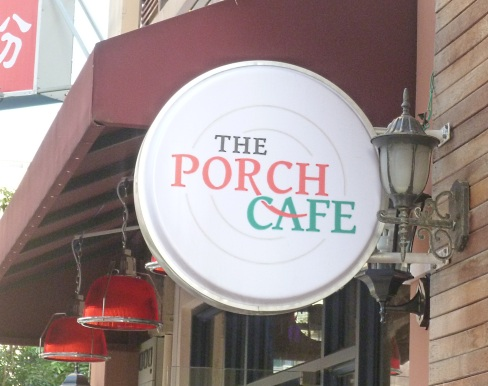
We always called it "the coffee shop" but it has an actual name.
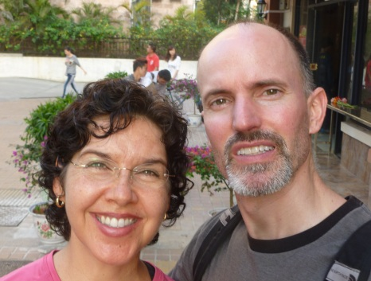
Me & E. My hair was always super-curly in the humidity.

Our Gecko buddy who lived in our bathroom at the first house. We would cheer him on, hoping he'd eat all the mosquitoes. I got about 200 mosquito bites on my legs. I looked diseased. Fun times.

I think the only rules about hauling things are that they have to stay on the truck.

Here we go with Kari & Caleb for street food at the south gate of Hainan University. Eric watched but did not care to join us.
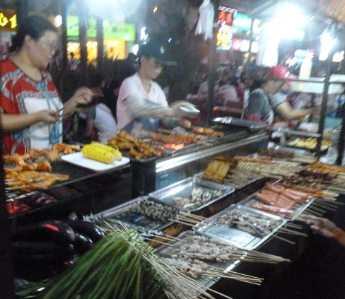
A BBQ stand, notice the yummy fish and squid and things near the front? Yum!
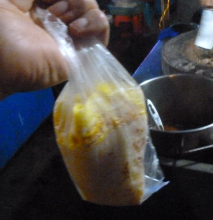
I selected this tortilla-shaped egg dish since it looked the least fly-exposed and had not been handled by dirty hands as much as some of the other food.
I considered eating here because of the large flame with which he could kill the germs.
Another look at a BBQ table. Caleb ate here.
It was incredibly loud here with horns honking and people haggling over prices but this guy was having a great nap on his Dad's eBike right in the middle of all the fuss.

This was the "fried" ice cream place. They blend fruit with sweetened condensed milk, then put it in this metal pan that must have dry ice beneath it because it quickly turns into ice cream. I had Mango and it was good, so rich I could only eat half.

Some of the interesting fruit they sell everywhere

I think this one is called a Jackfruit. It was huge and spiny and didn't look good at all.

The blackberries here are as long as three put together from back home.

The grapes were nearly as big as golf balls, see how they compare to the apples?!
A motorized rickshaw. We were told to avoid them, but we eventually rode in one. That's when we found that those guys drive even crazier than the cab drivers - and cab drivers routinely drive on the wrong side of the road, honking at oncoming traffic to suggest that they move out of the way.

One of the many KFCs in the area. We did not partake.
The Pizza Hut sign - this isn't how I remember Pizza Hut from my childhood, but maybe they've changed in the past few decades.
This is how they carry heavy loads here.
Fun with translations. This is a coffee shop with four levels of coffee: Plain taste, Warm, Freedom, and Rigorous.

Fun with translations. This is a coffee shop with four levels of coffee: Plain taste, Warm, Freedom, and Rigorous.

This was on a packet of underwear in the grocery store. I loved how they translated "Playboy Bunny" into "Fair rabbit childe" - perfect.

Boomer! He is a great dog. You have to yell his name each time you see him, it makes him very happy.

The sign said "Men" and "Women", making it look like the men should pee on the tree on the left, and the ladies should go behind the tree on the right. The actual toilet was off to the left about 50 yards.

At Baishamen park with Diody. The first time Eric and I tried to find it, we got very lost. We had to call Lena from a cab so that she could tell them where to take us to get us back home. This time Diody decided to take us there himself so we'd make it home!
They have lots of exercise equipment that is designed for grownups. It was fun.

Back massager machines
Calf massagers. Eric was watching that Chinese lady to find out how they work.

Wax on/wax off machines, just like in the movies.
A soft-looking tree in the park.

This place was eaten up with brides. These are two of the 4 or 5 we saw there. They were all getting pre-wedding pictures taken.

Four-wheeler rides at the beach.
This is a rubberized track for running that goes all around the seashore.

Our first look at the Century Bridge, leaving Hai Dian Dao for Haikou proper.
A bicycle built for four - kind of like a paddle boat on dry land. Notice the people drinking out of coconuts. There's a lot of that here. They often throw the meat away, but at home young coconut meat it is worth a lot of money!
A dragon made out of shrubbery in Evergreen Park in Haikou.

Back across Century Bridge, heading for the coffee shop.
More meat exposed to the elements in the grocery store. This takes some getting used to.
Another trip to RT Mart, because we needed more supplies for our American breakfasts.
These wooden shoes were worn by a very old man. I cannot imagine what that man has seen in his lifetime - more changes than most people will ever see, I'm sure.

Remember when I said you shouldn't look too closely at the canal water? This is why!

On Wednesday of the 2nd week we moved another truck's worth of stuff, and Eric, Kari, and I moved into the new house. The family followed on Friday.
This is our new bedroom in the new apartment - nice!
Fun with store signs.
I don't know why wolves are so popular in clothing store names, but it is.

For Business Trip Fashion.
I saw several of these "Boy & Girl Fashion Pot" stores, they must be the rage.

I imagine this sign was ordered via phone and the "t" just didn't come through.

Eric - he can't resist a rock, even in a parking lot.
Social Customs
This was classic. This guy was slapping his stomach as he walked down
the street, then he started digging in his navel. He finally pulled his shirt
down after he saw me taking a picture. I ruined all the fun!
Social Customs
Other social customs here that seem strange to us include harking and spitting
anywhere - like on the floor of the bus while you're sitting beside someone.
The raising of the shirt to expose the belly seems to be very common here also.
I guess because of the hot weather, men just need to air out the gut every once
in a awhile.
People also love to stare at us. We are usually the only white people around
so we get these amazing stares. I had always thought it was human nature
for people to smile back if you smile at them, but this is not true. We get what
we call, "the turd eye" quite often. I think they know it at birth because some of
the harshest looks we get are from the smallest children.
But then there are some people who treat us like celebrities. They get so
excited to see us and enjoy playing the game of "try to understand what the
foreigners are saying". Just like anywhere, there are all kinds of people.
The general rule was that in a group, the Chinese were not very friendly. However,
when you were one-on-one or in a small group, they were wonderfully friendly.
We were amazed by how quickly we made new friends who feel like good friends already.

Shen Gao school This was the site of our attempts at teaching English

We get a lot of stares a the school, and a LOT of "HELLO!" yelled at us from a close distance. It wasn't a friendly greeting so much as a way of teasing us, but overall the kids are sweet and friendly

Lena with the 6th grade teacher. She has an awesome teacher voice. It made Eric and I sit up straight and we didn't even know what she said!

Lena with the 6th grade class, which we got to observe again before we plunged into our second attempt at English with 5th graders.

Eric, up front giving his all.

The little guy up front caught me taking pictures - he was supposed to be reading out loud.

The very interesting bathroom at the school. It is a line of squatties, the stalls do not have doors of any kind and no one ever shuts the outside door. That way you can see people outside because hey, who knows when someone you've been looking for will walk by, right?! The sink is outside and has a bar of soap inside a knee-high panty hose tied to the sink. And after a couple hours of using blackboard chalk, you're glad to see it!
Notice how the guy's butt is tucked under him a bit? That's because it is scary as heck to cross the road here. The rule of the road is, "Right of size" not "Right of way" and people are the smallest (also make the least damage to your car) so they don't mind hitting you so much.
One of the bigger roads we crossed each week on the way to school and back.

Car seats, schmar seats. It develops their grip to make them hold on.

These "oven mitts" are popular here for the eBikes. I'm told it is to protect the hands from the sun. It looks very hot and uncomfortable to me!

Lena getting some nice veggies for a future meal
The oven mitts in action.

More of the child safety procedures. We saw this all the time.

This guy would weave cute little creatures out of blades of long grass.

A pizza Eric got at the coffee shop - half pepperoni and half Hawaiian. Pizza in China!

These little "rides" are very popular here, they are truly everywhere and are nearly always in use. One of them even sings the ABC's in English.

Ladies having fun with their kids and a bike.
The same picture, but showing you how many stores advertise their food by showing pictures of raw meat. The Chinese really like to have a relationship with their food before eating it.
Overheard by Kari, "Rebekah, please stop shaking the ladder." I think this was a fair request! :-
Dorks in action. I absolutely hate it when we dress alike, but
on this day we honestly had nothing else to wear. The washing
machine was still at the old house and all of our clothes were dirty
except for what we had on. Man, it was embarrassing.
And don't even get me started about the tennis shoes with dress slacks...
After a full day, our friend Sarah took us to Happyworld Footcare for foot massages. It was an hour-long slice of heaven for only about $12 (US) per person. I don't know why we didn't go back every single night! Here Eric reacts to the scalding water foot bath.

At Happyworld they had giant fish in a small tank. They were really huge.

This sign accompanied the giant fish, "Walrus vilent and do not close touch." Roger that.
Happy dressed-alike couple

Hey, since we're dressed like dorks we may as well act like dorks, right?!

The next morning after breakfast we took a long walk with most of the family. The new apartment is walking distance from the seashore and the nice park. Here the local school kids clean up the beach.

Near the park these people were learning some type of martial art. I think it was Kung Fu.

We walked too long and ran late for an appointment, so we had to take a rickshaw in order to make it on time. We had been warned never to take a rickshaw because they drive too crazy. Considering how everyone else drives there, this is a big statement. We did find out that what they said was true. These guys are nuts!

These men moved a heavy upright piano down from the second floor, then up to a 3rd floor apartment in the new place. Tough work!
.png)
Movie Moment: This movie shows how the piano movers chanted so that they'd all stay in step with each other down the stairs.
One of our many tasty meals. This was one of several we had where the fish still had their faces attached.

This was a Chinese fast-food place. I didn't go inside, I just thought the menu was an interesting mix of almost-American-looking food.
The somewhat over-the-top signage for the Fitness and Yoga club we visited. I tried to do a spin class but all the bikes were already taken, so we lifted weights instead.
The recycle lady is serious about gathering plastic bottles.
Diody celebrates as we just finished transforming the 3rd floor of the coffee shop into a church, and just in time for the service to start too!

After church, we all went out to eat and got to have a private room which was nice for my nerves. Restaurants in China can be loud and a bit chaotic, but this place was very quiet.
That afternoon we had a big Tea Talk that lasted for 3 hours. It was only supposed to last for 90 minutes so I guess they enjoyed it. This is Decker, Red, and Catherine - great kids.
Pillar

That evening we went out to eat with Jackie to try a place she likes. It was called Double Happiness and was located at a large, nice mall.
Here we are in front of the rock decoration at the mall
The restaurant
I forgot to take a picture of the meal before we dished up, but here it is on my plate. It was (starting at 12 o'clock), Wenchang chicken, roast goose, honey roasted pork, and bok choy. Yum!
Kari & Eric enjoying the good food.

These were the first paper towels we saw in a restroom in weeks. In China
they do not give napkins in restaurants, paper towels in restrooms, and often
no toilet paper either. If there is toilet paper, there is only one dispenser
outside of the stalls so you have to get what you need beforehand, or take your own.
So anyway, we were excited to get to dry our hands after washing them. It's the little things!

I was taking a picture of the Goose Heads, but this guy thought I was taking a picture of him. Those crazy Americans, you never know what they'll be taking a picture of next!

Even more exciting than the paper towels was the discovery of a Frozen Yogurt shop - awesome! Eric said he never saw us more excited during the entire trip.

The squatty potties flush with a foot-lever, but they have fancy ones that don't need the lever.
In the Haikou train station, waiting to get on our train to Sanya. We were the only white faces among hundreds of Chinese. It was a strange feeling.
Here we are in our own little private compartment, heading out for our 2 day vacation in the beach resort town of Sanya. We didn't mean to get the fancy seats, but we couldn't understand the ticket lady. This was one time our misunderstanding turned out for the very best.
Scenes of the countryside as we went along the southern coast of the island.

There were some small but rugged mountains in the middle.
We think they are growing tea here.
Our friend Angie is a Li, which is one of the two main minority groups of Hainan island. I think it is similar to being American Indian in the U.S.

Our friends got us a great rate at an amazing resort. It was the nicest place we've ever stayed!

Does it get more luxurious than a bath tub on your balcony?
The view (at an angle) from our balcony, the sea is back there above the trees but it is hard to see.

More fun with signs.
One of the most confusing signs I saw in China was one of the most important. In case of fire I am supposed to, "Block fire and use for escape. No occupy, block, and close." How about if I just go down the stairs and out of the burning building?!

Our first walk on the beach in front of the hotel.

Eric in front of the hotel. A lawn like this is very rare, we didn't realize how much we missed green grass until we saw this. We had to take off our shoes and walk on it.
My friend Hattie's mom owns a ceramic painting business. I took this to show her that maybe they could expand their business to be like this outfit. Vein painting could become all the rage.
The Chinese really like to get acquainted with their food before they eat it. Seafood places have tanks where you can choose the eel, puffer fish, or fish of your choice for your meal. These are eels.

Mussels and assorted fish, turtles, etc.

More dinner options.
Our hotel from below.

They had this girl dress in fancy costume and greet all new arrivals. She put a flower in the hair of each newly arrived female.
The swanky pool at the beautiful resort.
There were lounging areas everywhere around the resort. You could pull the curtains around your selected couch for privacy and mosquito control. There were often people sleeping or just laying there.

Looking out at the sea from the hotel.
More places to chill.
A Chinese bird on the grounds.
Trying to be artistic

The interior of the resort.

That Tuesday we were in Sanya for a full day so we went out to do the tourist thing. We discovered that we didn't get the memo about the dress code for touristing.
We went to the Luhuitou scenic area, which I'm told means "Deer Looks Back" - but I have no idea what that has to do with anything. It is a park they've built around an area where there are lots of granite boulders out in the sea. We went there thinking Eric could do some climbing, but didn't realize he'd be in the middle of a few hundred tourists.
The main entryway into the park. The grounds were very lovely.
Eric with a statue of a warrior who put down a rebellion years ago. He looked tough.

Me, doing a terrible job of acting scared.

They had a statue display of Romeo & Juliet but I think poor Juliet's bust area gets involved in a lot of posed pictures there.

Hot tourist guy that I was checking out.

X marks the spot - maybe there's treasure buried under those trees!
First looks at the rocks.
Eric can always see better from the top.
These were marvelous rocks, and you don't have to take my word for it - I have proof!

Maybe he can say that the sign shows a picture of a ladder - he wasn't climbing any ladders!

The one sign that was in clear, easily understood English was the one Eric didn't want to see!


I took this to show my friend Ron. I totally think this should be his new nickname.

Sign on a chair swing. I think these are words to live by.
Strange tree - I have no idea what it is.
Eric, out enjoying "nature" with a few hundred Chinese tourists.
Squinty Shawnna and some flowers.

Casazzas and the ocean

Me and my wild humid-weather hair.

I'm not sure what to say here, I'm feeling a bit overwhelmed by all the island wear.
Eric, working on a boulder problem.

Eric tried to get his rock climbing fix but it was hard without his climbing shoes

Putting myself into the scenery
In case you were curious, the Love Square is over that way.

They had dragons, elephants, and whale shrub creatures. The whales were the best.

Back at the hotel, admiring the amazing flower arrangement in the lobby

The fountains in front of the hotel and the ocean beyond.
The bull looked intimidating until they stuck flowers in his nose.
More of the bamboo scaffolding. They literally used this everywhere and for very tall buildings.
Our actual conversation here - Shawnna: "I'd like a picture in front of these flowers, but I look so bad today." Supportive Husband Eric: "That's OK, I'll just move WAY back."
The hotel had a pretty path all along the sea side

Eric called this, "Tough Duty." We were really roughing it here. (Don't worry, he has shorts on!)
Working on this web page in high comfort.
Wednesday after breakfast we started the long trip back. This is the train back to Haikou - no fancy enclosed seats this time

I couldn't get the macro function on my camera to work, but I really wanted a picture of this pretty flower. Just imagine that the picture is sharp and clear, OK?
We got convenient backward seats facing the rest of the train car - everyone wanted to stare at the white people anyway so this way no one had to crane their neck.

Except for the ticket purchase part of the trip, the train travel we did was very well
organized,
easy and enjoyable. Here they force an orderly line for Taxis at the train station.
Without the intervention of authorities, the Chinese don't line up well. It's more like a mob of
cutters all getting in front of each other.

When taking a taxi, please pay by the meter. Get out of the bus, please bring your belongings. In case of refuse or other serious quality problem, please remember the time, place, car number, driver's supervision and cartoon number. Tickets, and other requirements, and to the local department of pipe complaints, complaints telephone: 66665666

I don't know what this building is, but I'll bet the government owns it. Fancy!

Our last Tea Talk session was a very nice one. Here we are with our new friends Amy (we got to help her choose that name!!), Jesmine, and Kuang Kui.

I don't know what these are, but they look interesting.

Me with our friend Jackie, wearing the Oklahoma shirt we gave her. She is awesome!

This is a bad picture, but I wanted to include one of Jackie & Eric. She was a good friend to us.

This sign was on a sliding door. Unfortunately, I was still having trouble with the close-up focus. It said, "Please avoid crushing injury." I am on board with this.

Checking out the market near the new apartment and coffee shop.
There was a long line of "butcher booths" in which the wares are displayed.
Pig face for dinner anyone? This is not something I've ever seen before.
Gina & Ina (pronounced Ena) They are two of the good friends we made - such sweet girls. And sisters, in case you couldn't tell!
On our last day of our English classes at the primary school, Eric saw some boys doing hand stands and decided to join in. The kids LOVED it.

The crowd gathered for Eric, but then started hamming it up for my camera.

Eric giving an English lesson to a 5th grade class - our last lesson of the trip.
We have a much greater respect for all teachers now, that was very hard!
.png)
Movie Moment Movie Moment Eric the teacher, having half of the class read part of the lesson aloud.

Our friends - Diody, Lena, and Kari
Unfortunately, Caleb & Rebekah were already in bed before I thought of taking
this picture on our last night.
Thanks for a great trip!
Cultural Differences
Americans are always asking me to talk about the cultural differences we saw there. I've tried to gather some of them here. Please keep in mind this is just what I saw during a very short trip, so I could be way off base with many of these!!
| China | America |
|---|---|
| Almost no paper towels available. Kleenex-type tissues are used in homes in place of them. No napkins provided at restaurants. Very limited amounts of toilet paper provided in public restrooms. | We live by paper towels - using them for plates, coverings over dishes in the microwave, and cleaning. We expect lots of napkins to be available at all places where food is served, and toilet paper to be provided in even the most primitive locations. |
| No hot water in homes except in the showers. | Hot water is available at every sink in the house and in the showers and bath tubs. |
| Pedestrians beware - not even the sidewalks are safe! | Pedestrians are king. Pedestrians have the right of way in America. |
| Child traffic safety is not regulated by the government. | In America, there are laws about child safety seats that are strictly enforced. |
|
In conversation, the typical Chinese person's goals seem to be
1) Do not offend 2) Communicate your point If the two come into conflict, it is better to avoid offending someone and than be understood. |
An American's conversational goal is only to communicate their point. I think in America we assume that the other person knows we don't want to offend them, so we just say what we're trying to say in the most direct manner possible. |
| The Chinese drink hot or warm water, even on the warmest days. There is a general belief that cold water is bad for digestion. Americans are seen as crazy for our "love of ice." |
For most Americans, if you placed a glass of warm water in front of them
at a meal they would stare at it like it came from another planet.
We have no concept of drinking warm or hot water with meals.
In America, meals are always accompanied by ice water and usually another iced beverage. I personally like lukewarm water, but that's because I'm often cold in air-conditioned restaurants. |
| Meals are eaten family style without the use of serving spoons. Shared plates are dipped into using the same chopsticks that you've been putting into your mouth. | Many Americans are not happy about sharing saliva with dinner partners at this level. Especially when one of them is sick. |
|
The Chinese seem to eat Chinese food almost all the time.
We saw this in Italy too, they just did not seem interested in other types of food. |
Americans eat so many different kinds of food, I sometimes wonder if there is such a thing as "American food." In Oklahoma, Mexican is the most popular type of food, but we also eat a lot of Thai, Chinese, Indian, and Mediterranean food. Our version of American food is a chunk of meat (steak, chicken breast, or lamb shoulder) grilled on the outdoor grill, with a side of veggies, a salad, and (for my husband) a slice of whole wheat bread. |